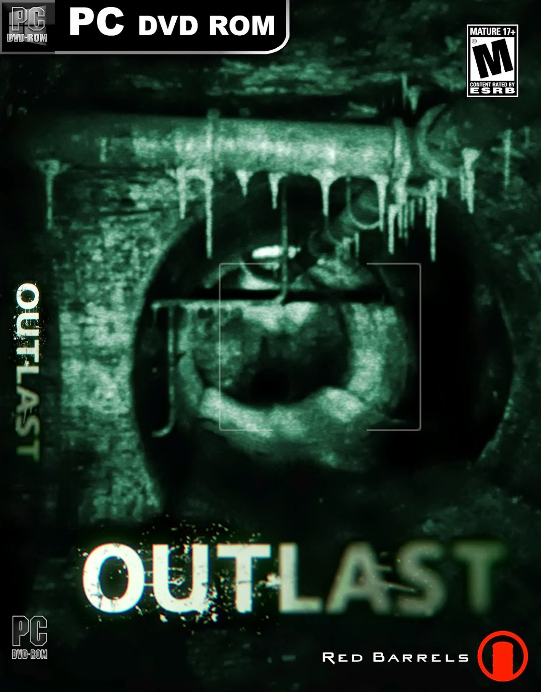
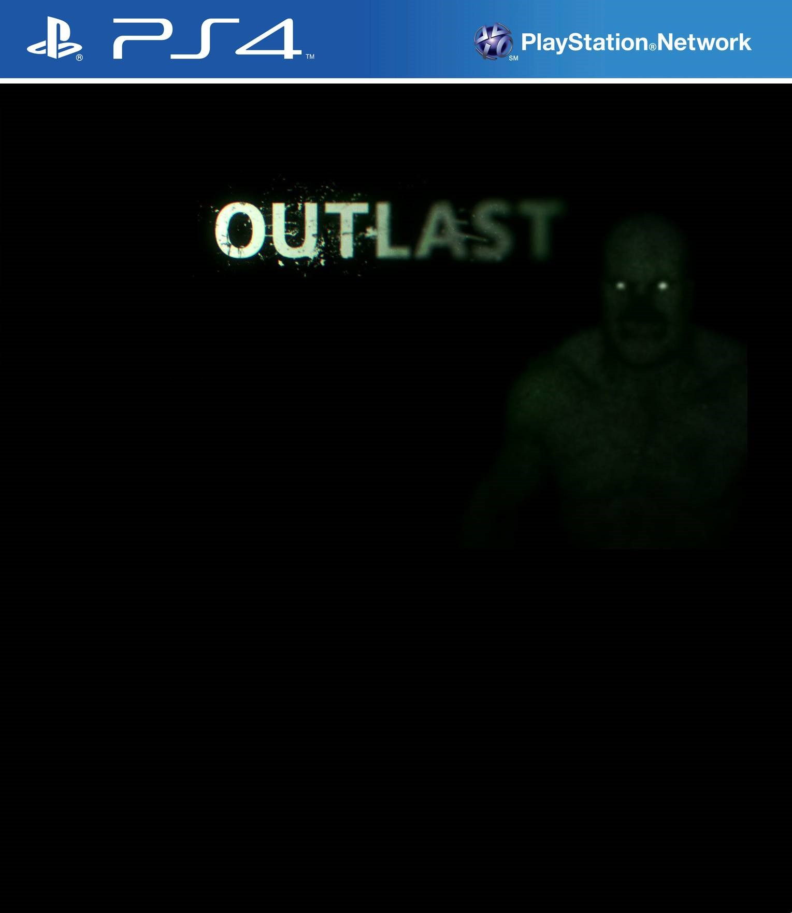
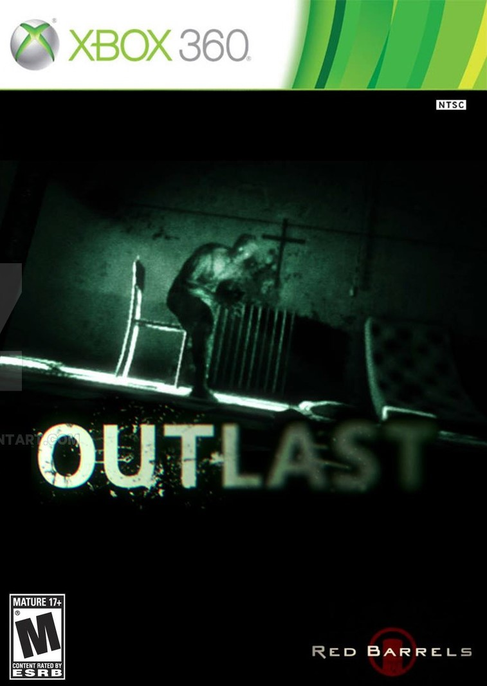

Outlast
Outlast is a first-person survival horror video game developed and published by Red Barrels. The game revolves around a freelance investigative journalist, Miles Upshur, who decides to investigate a remote psychiatric hospital situated deep in the mountains of Lake County, Colorado. The Whistleblower DLC centers on Waylon Park, the man who led Miles there in the first place.
  Outlast was released for Microsoft Windows on September 4, 2013, and for PlayStation 4 on February 4, 2014. Outlast received generally positive reviews from critics, and it was praised for its horror elements and gameplay. Linux and OS X versions were later released on March 31, 2015.

| Review scores | |
|---|---|
| Publication | Score |
 |
7/10 |
| 9/10 | |
 |
7.5/10 |
 |
7/10 |
 |
7.8/10 |